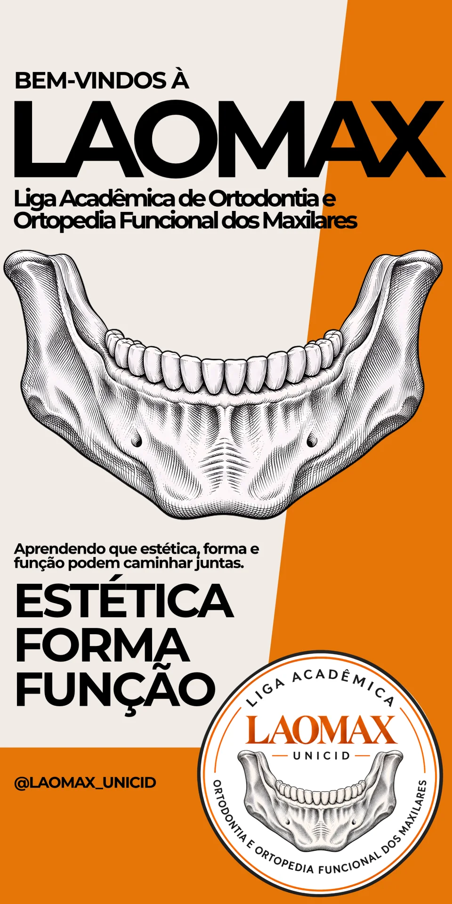

Ensino
Aprofundar o estudo e discutir as perguntas que surgem ao longo da graduação.

Nossa proposta
Aprendendo que elas podem caminhar juntas.
A LAOMAX reúne o interesse pelo estudo da Ortodontia e da Ortopedia Funcional dos Maxilares na UNICID. A proposta da liga é criar espaço para o aprendizado em conjunto e para a troca de conhecimentos.
Aqui você encontra a agenda, as oportunidades de participação e um caderno de apoio à leitura científica.
Conheça as formas de participarFormação acadêmica
Aprofundar o estudo e discutir as perguntas que surgem ao longo da graduação.
Desenvolver a leitura científica e aprender a buscar, organizar e avaliar informações.
Pensar a relação entre a formação universitária e a comunidade.
Faça parte
Conheça as formas de participar da LAOMAX.